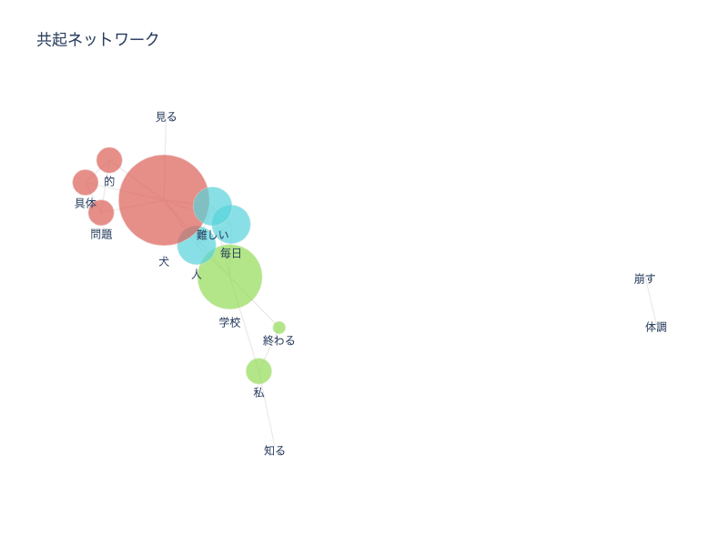
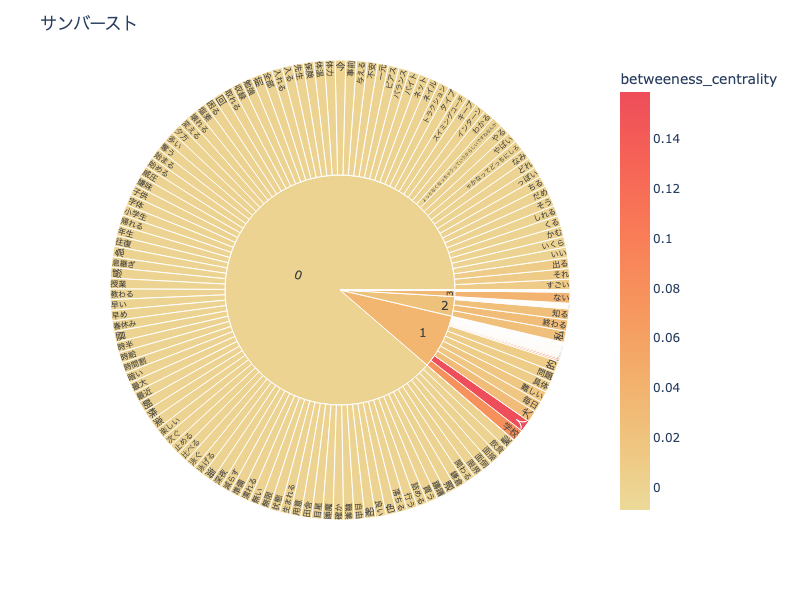
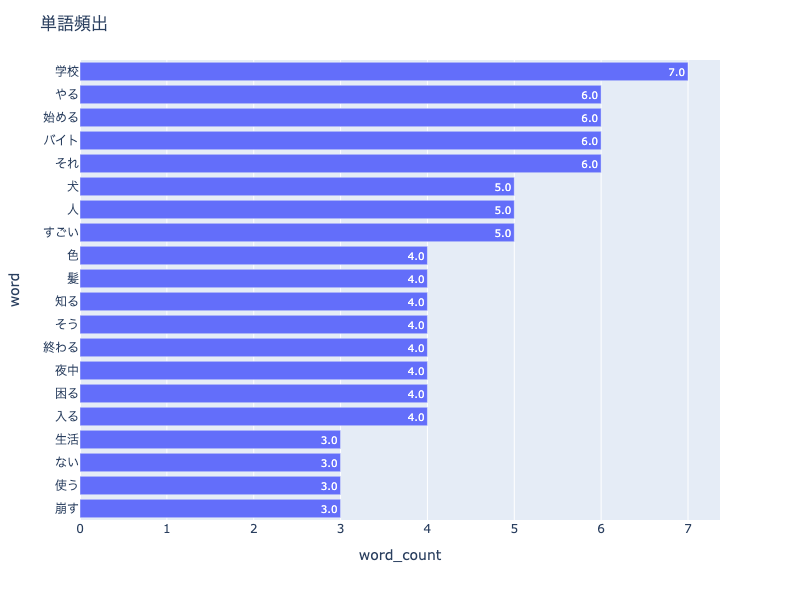

テキストマイニング
テキストマイニング
大量のテキストデータから、有益な情報を取り出すことを総称して
テキストマイニングと呼ぶ。
自然言語解析の手法を使って、
文章を単語（名詞、動詞、形容詞等）に分割し、それらの出現頻度や相関関係を分析することで有益な情報を抽出する。
テキストデータは、
「定性データ」の代表的なもので、この「定性データ」を整理・抽出し統計的に
「見える化」することで付加価値の高い情報を収集することを目的としている。
参考サイト＞＞
トレイナ
見える化エンジン
今回は、インタビュー本番に向けての練習として、班でインタビューを行いテキストマイニングを行った。
除外する単語に、「何」「感じ」を含め分析を行ったところ、画像のような結果となった。



共起ネットワークの見方として、
「円が大きいほど出現頻度が高い」「線で結ばれている単語は同じタイミングで使われることが多い」という特徴がある。
うまくいかなかったところ
・「体調」「崩す」は「犬」と一番関連している単語であるが、離れてしまっている。
・単純に単語が少なすぎる。
改善点
・インタビューをする際、話し手の間では同じ話題について話しているとわかっていても、
実際にその単語を発していなければテキストマイニングではそれが判断できないため、集計が上手くできなくなる。
→質問や話を広げるときは、単語を繰り返すようにすることが重要